Piik shares your screen with friends. A game, a window, whatever you’re up to. They watch right in their browsers.Piik 是一个和朋友分享屏幕的开源项目。 打一局游戏，或一起看你正在做的东西。 朋友用浏览器打开，就能看。
One host. Up to 20 friends. No viewer installation.一位房主，最多 20 位好友。观看无须安装。

“Wait, let me show you something.”“等下，给你们看个东西。”
How it works怎么玩
Pick a screen. Send a link. Watch together.选画面，发链接，一起看。
01 /
Pick your picture.选好画面。
A screen, a window, a game. You choose what gets the spotlight.一块屏幕、一个窗口、一场游戏。 想分享什么，由你决定。
02 /
Send the invitation.发出邀请。
Drop the room link in your group chat. Your friends open it in a browser.把房间链接发到你们的群聊。 朋友用浏览器打开，就能加入。
03 /
Watch together.坐好，一起看。
Friends join from a phone or computer. No installation needed to watch.朋友用手机或电脑浏览器加入。 观看不需要安装。
Getting started上手
Where to start.从这里开始。
Already have an invitation? Just open it. To share, choose Browser or App.有邀请链接？直接打开。想自己分享，可以用浏览器或 App。
For the front row来看朋友玩☺
Join a friend加入朋友
Open the invitation your friend sent.打开朋友发来的邀请链接。
Press Play if your browser asks.如果浏览器提示，点一下播放。
Use the bar below the picture for sound, theater, fullscreen or a floating window.画面下沿可以调声音、切剧场、全屏或小窗。
Nothing to install. A room code also works on the same Piik site, with its access settings.无须安装。也可在同一个 Piik 站点输入房间号，按站点和房间的访问设置加入。
For the player轮到你上场☺
Share from a browser用浏览器分享
Open the Piik site your group uses.打开你们使用的 Piik 站点。
Choose Start sharing, then pick a screen, window or tab.选择开始分享，再选屏幕、窗口或标签页。
Check the sound switch and send your invitation.确认声音开关，发出邀请。
Piik starts in illustrated mode; choose EN for text labels. Keep the sharing tab open. Source and sound choices depend on your browser and system.Piik 默认使用图示模式，点击顶部的「中」可显示文字。保持分享标签页打开。可选画面和声音因浏览器及系统而异。
For your own setup带上自己的小房间
Start with Piik App使用 Piik App
Have a Piik App package? Extract it in full, open the app, and choose:已有 Piik App 安装包？完整解压，打开应用，再选择：
Local room本地房间
Friends on the same network.和同一局域网里的朋友一起看。
Public invite公网邀请
A temporary Internet invitation.生成临时的互联网邀请。
Connect to Site连接站点
Use an existing Piik site.连接已有的 Piik 站点。
The App opens the controls in your browser. Keep both the App and sharing tab open.应用会在系统浏览器里打开操作页面。分享时，保持 App 和分享标签页都打开。
Public downloads and a public demo aren’t available yet. For now, start with an invitation, a Piik site, or an App package shared with you.公开下载和公开演示尚未上线。目前，请使用朋友提供的邀请、Piik 站点或 App 安装包。
Before the next round开场前，聊两句
A few good questions.你可能 还想知道。
Does everyone need Piik App?每个人都需要安装 Piik App 吗？
No. Friends watch in a desktop or mobile browser without installing anything. You can also host from a supported desktop browser on an existing Piik site. Piik App is another way to host.不需要。朋友用电脑或手机浏览器就能看，无须安装。你也可以在已有 Piik 站点上，用支持屏幕分享的桌面浏览器当房主。Piik App 是另一种开房方式。
How many friends can join?最多能叫多少朋友？
One host and up to 20 invited viewers fit in a room. Piik is made for a private group hanging out around one screen.一个房间支持一位房主和最多 20 位受邀观众。Piik 适合熟悉的一群人，围着同一块屏幕一起看。
Can my friends hear the game?朋友能听到游戏声音吗？
Yes, when the selected source and capture method support audio. Check the sound option when choosing what to share. Browser and operating-system support varies; viewers may need to press Play and turn on the video’s sound.可以，前提是选择的画面来源和采集方式支持声音。选择分享内容时，检查声音选项。浏览器和系统支持有所不同；观众可能需要先点播放，再打开视频声音。
What’s different about a public invitation?“公网邀请”有什么不同？
Piik App can create a temporary Internet link for its local room. That link lasts for the current App run and has no uptime guarantee. Video still needs a working direct or peer UDP connection; some restrictive networks won’t connect.Piik App 可以为本地房间生成临时互联网链接。链接只在本次应用运行期间有效，不保证持续可用。视频仍需可用的直连或对等 UDP 连接，部分受限网络可能无法连通。
Which platforms are ready?目前支持哪些平台？
Windows App and Browser are the current testing focus. Viewers use desktop or mobile browsers. macOS and Linux App builds exist, but physical capture and audio checks on those platforms are still pending.目前重点验证 Windows App 和浏览器。观众可使用电脑或手机浏览器。macOS 和 Linux 已有 App 构建，但这两个平台的实机画面及音频采集验证仍待完成。
A small project, open to tinkering.一个可以一起折腾的小项目。
Piik’s own code is MIT-licensed: use it, change it, host it yourself. Bug reports, clearer docs and little improvements are all welcome.Piik 自有代码采用 MIT 许可，欢迎使用、修改、自己部署。报个 bug、改一句文档，或做一点小改进，都很欢迎。